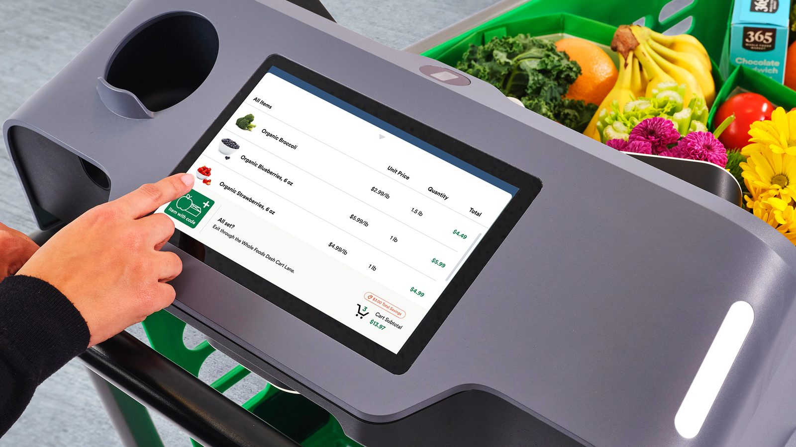
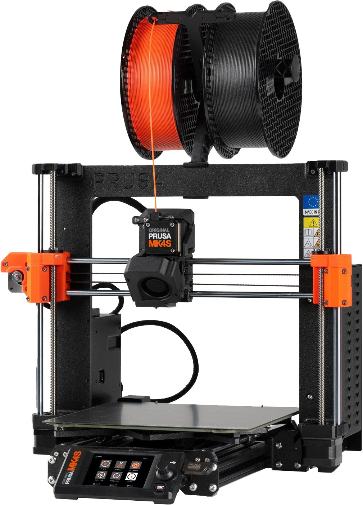
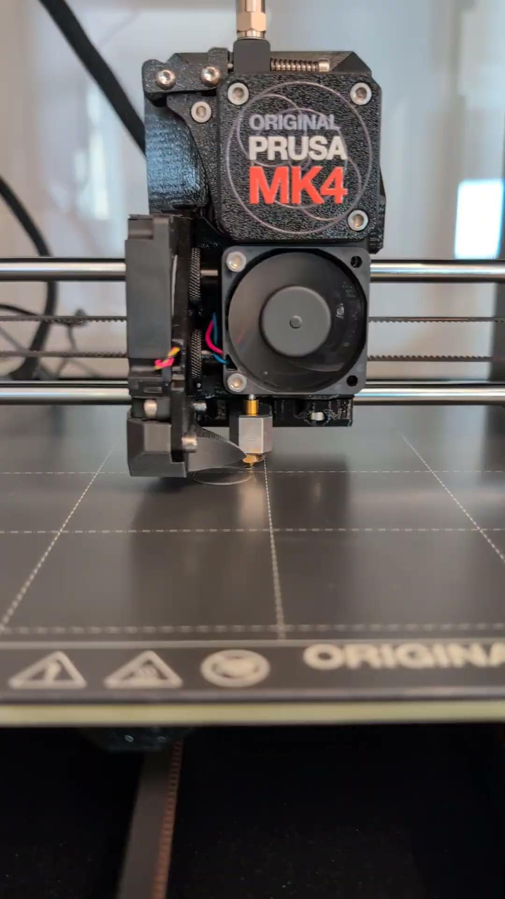
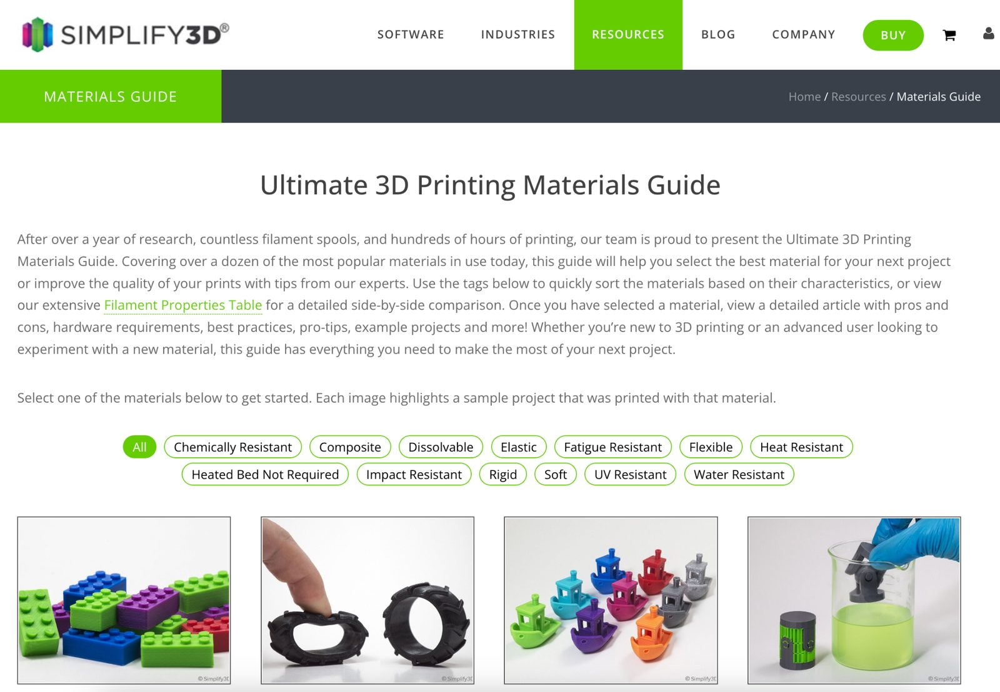
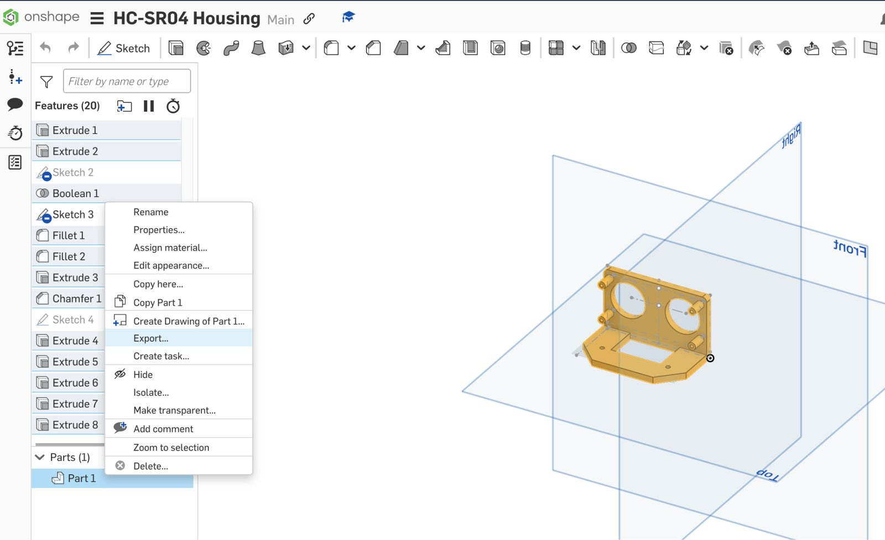
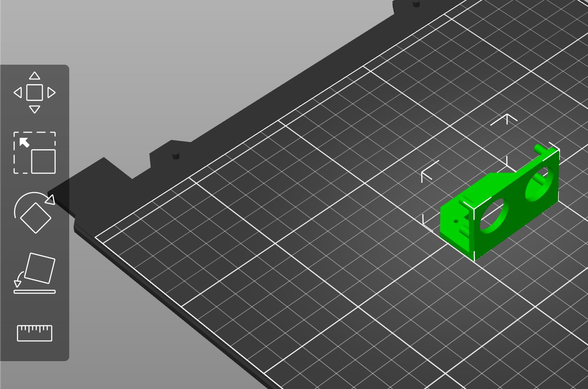
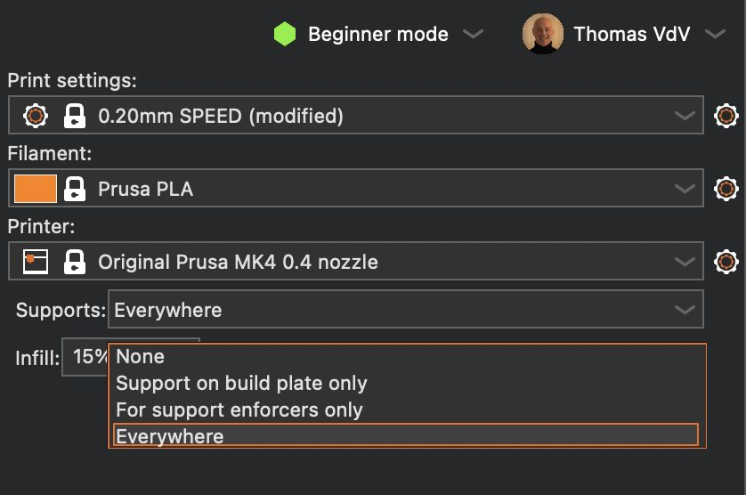
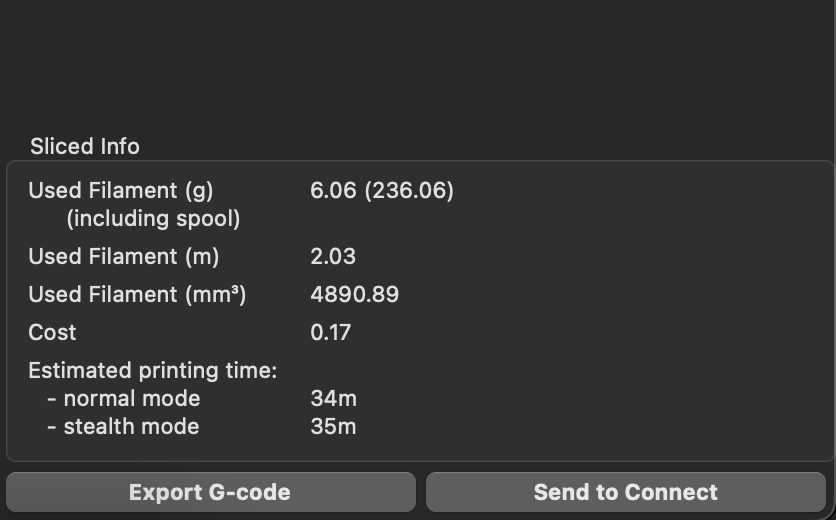
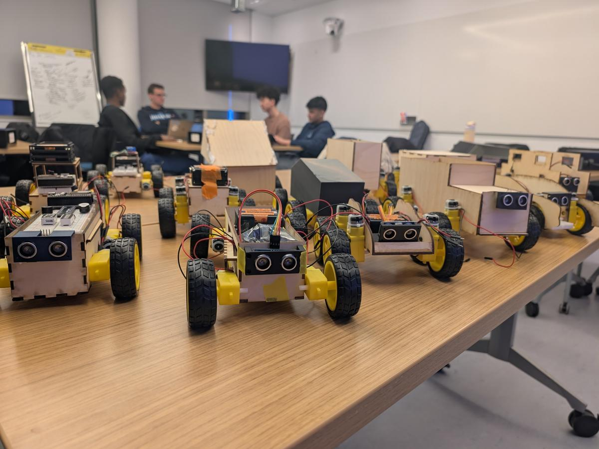

Where we are: the Robo Challenge
Six steps from sketch to race — Class 4 is step three. Today we 3D print the custom parts.
Week 2
Sketch & Prototype
- Rapidly sketch concept variations
- Build a foam core mockup to test form and mechanics
Week 3
Laser Cutting
- Create a laser-ready 2D design file from a sketch
- Laser cut structural components
Week 4 · today
3D Printing
- Model 3D parts — mounts, brackets, custom components
- 3D print functional parts for your robot and dispenser
Week 5
Electronics
- Wire motors, sensors, and controls on a breadboard
- Program basic movements using MicroPython and AI
Week 6
Connectivity
- Connect a microcontroller to a wireless network
- Build a remote control interface
Weeks 7–8
Assemble & Race
- Integrate all components and test runs
- Demonstrate the robot with mechanical systems and motors mounted

Inside a 3D printer
Four parts do the work — everything else supports them.
Filament
The plastic feedstock, spooled above the printer and fed into the hot end.
Nozzle
Melts the filament and lays it down, layer by layer — ours is 0.4 mm.
Motors
Move the toolhead and the bed along the axes while the part builds.
Heated bed
The build surface that the first layer sticks to.


Materials
PLA is the profile our printers run — but the material you pick changes how a part behaves.

Browse by property
From CAD to printed part
Three tools, three steps — the same loop for every part you make this term.
Step 1 · Design
Onshape
Model the part
- Sketch and extrude in the browser
- Export the part as an STL
Step 2 · Prepare
PrusaSlicer
Slice the model
- Import the STL and arrange it on the bed
- Slice it into G-code
Step 3 · Print
Prusa MK4
Run the printer
- Save the G-code to a USB drive
- Load and print at Nolop




Tips & pitfalls
Seven habits that keep the printers — and your prints — in one piece.
While you print
- Do not leave your print unattended
- Check the filament so you won't run out
- Remove your print promptly when it finishes
- Leave a clean working bed behind
Support & alternatives
- Think about support placement during design
- Throw support material in the trash
- Consider laser cutting as a faster, cheaper option
Common pitfalls
Hot glue as a structural joint
It fails under stress. Use mechanical fasteners for load-bearing connections.
Tape-mounted electronics
Masking tape releases mid-run. Use standoffs, screws, double-sided tape, or adhesive-backed Velcro.
Wires through the drivetrain
A cable touching a spinning wheel will eventually get caught and ripped out.
No slack in sensor wires
If a sensor moves, its wires need strain relief and enough length to handle the motion.
An inaccessible battery
If swapping a battery requires partial disassembly, you'll waste valuable testing time later.
From the class
Photos from class sessions — the printers in the makerspace and parts that came off them.



What's due
One individual print and one team checkpoint.
3D print an interesting object
Design and fabricate an interesting object using 3D printing. This assignment is about the digital-to-physical workflow — form, function, and creativity. Due next week: bring the finished object to class for presentation and discussion.
Mid-point assembly check
A checkpoint that verifies your team has a physically assembled, structurally sound robot — and dispenser if applicable — with all electronics in place before you start writing software.
Demonstrate at Nolop
Bring the build
- Your fully assembled robot
- One supporting dispenser, if applicable
Submit in Canvas
Photos + self-assessment
- At least 3 photos of the build from different angles
- Current state — what is physically complete and wired? Be specific
- Known issues — what problems remain unresolved?
- Plan forward — what will you prioritize in the remaining time?
Criterion · prioritize these
What we're looking at
- Structural integrity · drivetrain & mobility · power system
- Sensor placement · serviceability · design intent
- Electronics mounting · wiring & connections · wire management